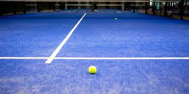

Reserva tu pista de pádel en segundos
Reservar ahora
Horario
9:00 a 13:30 y de 15:00 a 19:30.
De lunes a viernes (excepto festivos).
Instalaciones
Disponemos de 4 pistas:
· 2 en el Polideportivo Los Pasos
· 2 en el Campo Municipal B4
Duración de reserva
Cada reserva tiene una duración de 1 hora y 30 minutos. Después de este tiempo la pista debe quedar libre y recogida.